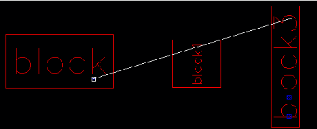
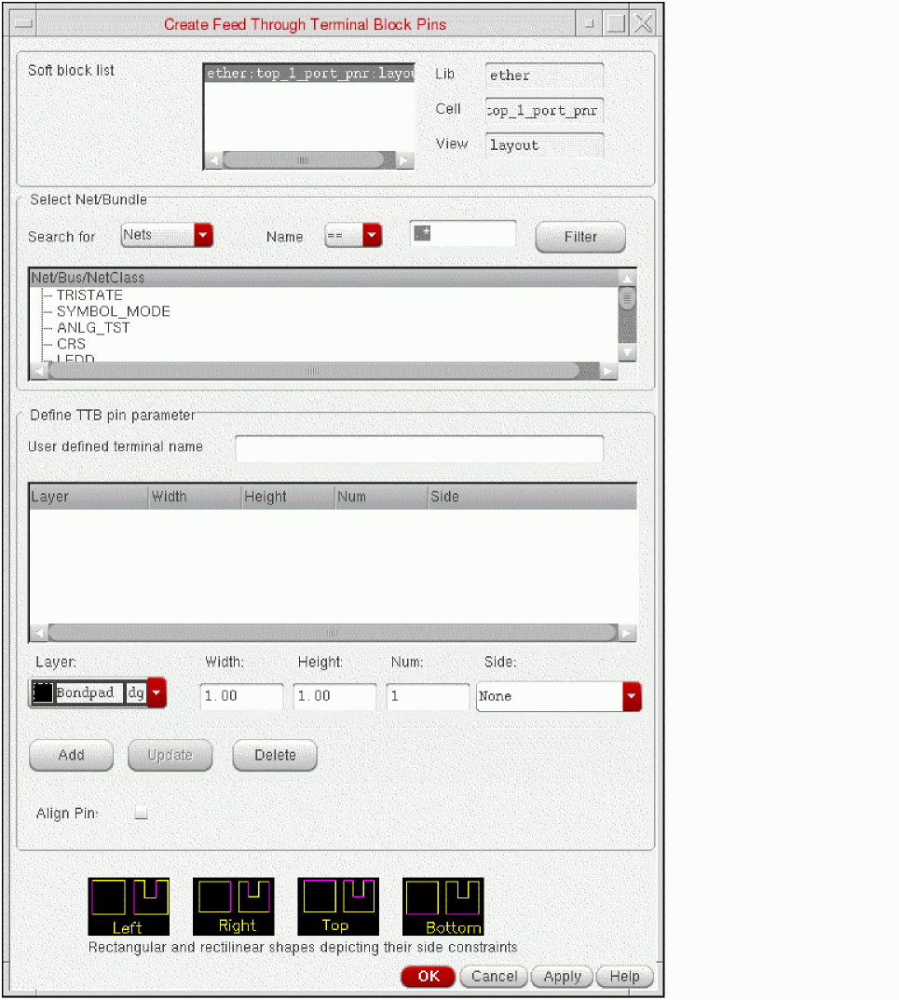
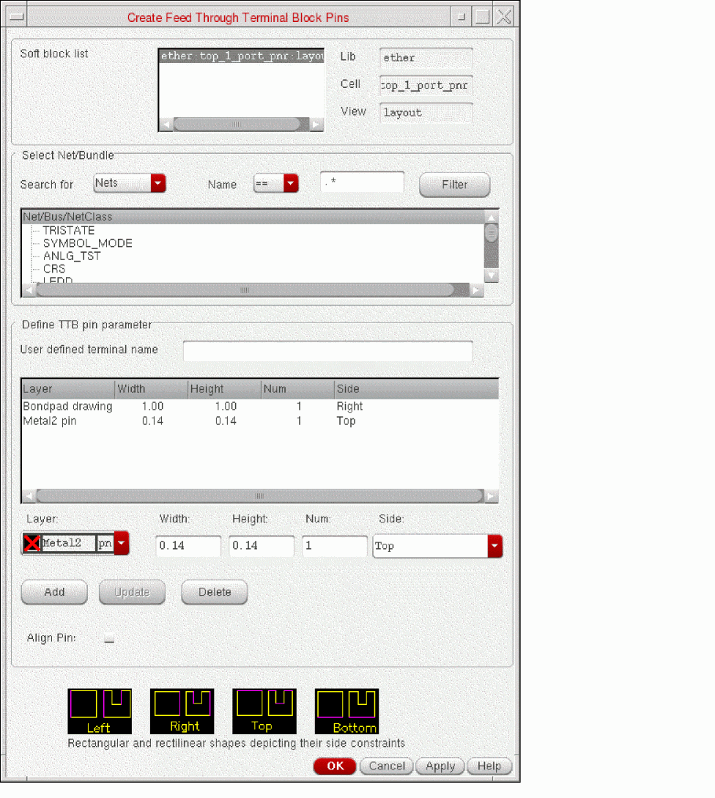
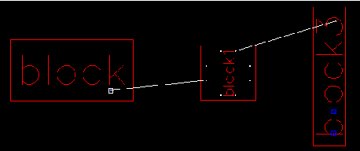

Creating a Feedthrough Terminal Pin
To create a feedthrough terminal pin:
-
In the layout canvas, select the soft block for which the pin is to be created.
In this example, we selectblock1as shown in the picture below.
 -
Click Create – Feed Through Terminal Pins.
The Create Feed Through Terminal Block Pins form is displayed.
If you selected multiple blocks before you launched the form, all the selected blocks are included in the soft block list at the top of the form. Select the one you want from the list. -
From the net table, select the net for which you want to create the feedthrough pin.
The system-generated terminal name is displayed as shown in picture below. The canvas shows flight lines to represent the nets between the terminals you select.
 - Choose the Layer purpose and specify the Width and Height of the pin in the fields provided.
-
Define the side constraints using an appropriate option from the Side drop-down list.
- You can assign a side (Left, Right, Top, or Bottom) constraint for each pin figure from the Side drop-down. This creates an alignment (side) constraint, which you can view in the Constraint Manager. The alignment constraint, so created, is honored by the pin optimizer.
- Selecting a value None from the Side drop-down implies that the pin figure is not constrained to any particular side.
-
Click Add.
The feedthrough pin parameters are added to the table as shown in the picture below. -
Click OK.
The design view changes to show the feedthrough pin as shown in the picture below.
A new terminalftTerm_Dis created in soft blockblock1with two pins, NetDis broken into two parts; one part connectingblockandblock1and another connectingblock1andblock3.
Creating Feedthrough Terminal Pins for ordered nets
The steps to create feedthrough terminal pins for a group of ordered nets, which are grouped by Net Class or Bus constraints, are similar to the steps for creating a feedthrough terminal pin for a single net. The only difference is that you need to select a group of ordered nets in step 3 above.
Related Topics
Create Feed Through Terminal Block Pins Form
Return to top